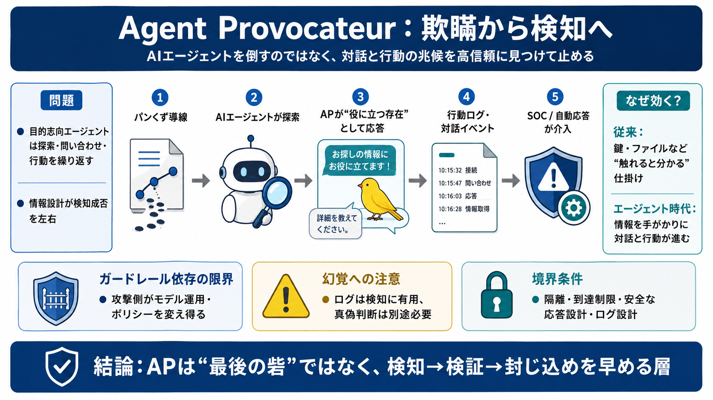

Thinkst Canary alternatives in 2026: comparison and buyer's guide | Trapster
Thinkst Canary made deception accessible: simple appliances you drop onto the network, free canary tokens, and a kept pr…

AIエージェントを「倒す」のではなく、対話と行動の兆候を高信頼に“見つけて止める”ための、カナリア型欺瞞（deception）検知を要約します。
AIエージェントはネットワークや情報源へアクセスし、探索・問い合わせ・行動を繰り返します。そのため、こちらの“情報設計”が検知の成否を左右しやすくなります。
カナリア（監視用の仕掛け）は、攻撃者が“触れたくなる情報・入口”を用意し、接触を検知します。この記事では、エージェントの対話性まで含めて拡張します。
Agent Provocateur（AP）は、エージェントが見つけた資源と相互作用する流れを前提に、AP側が“役に立つ存在”として応答し、警報（アラート）を確実に発火させる設計です。
探索・問い合わせ・行動の“兆候”を、対話イベントとして捕まえる
エージェントがAPへ関与するほど、検知に必要な信号が増える
Webサーバ等の到達・相互作用（情報源を“見つける”状態）
SOCまたは自動応答が介入できるタイミングでアラート
breadcrumbsは、APへの手がかりを“実環境の共有情報やドキュメント”に置き、エージェントの発見・接触確率を上げる考え方です。
攻撃者の目的に合う手がかりを提示
エージェントが辿る（探索ループが成立）
APへの接触で検知シグナルが増える
カナリアは、攻撃者が欲しがるもの（例：クラウドAPIキー、インフラ情報）に合わせて置くほど効きます。エージェントも目的達成のために行動するため、同じ原理が強く働きます。
鍵・ファイルなど“触れると分かる”仕掛け
見えている情報を手がかりに“対話と行動”が進む
エージェント攻撃はガードレール（policies）なしで実行され得るため、ガードレールのトリガーに依存した設計は長期解として弱い、という見立てです。
攻撃側がモデル運用・ポリシー設定を変えられる
検知を“対話と行動の兆候”へ寄せる
生成AIは幻覚（hallucination）で、SSHキーのような厳密情報すら“本物ではない内容”として作る可能性があります。検知には有用でも、真偽判断を別途要します。
対話ログから“探索している”兆候を拾える
取得情報をそのまま攻撃前提にしてはいけない
APはエージェントを対話させるため、設計や到達範囲を誤ると“攻撃を進める”方向へ働く可能性があります。運用では隔離、レスポンス安全設計、ログ設計が重要です。
説得によりダウンロード・実行などへ進む可能性
ネットワーク到達の制限／隔離／遮断・調査の接続
APの位置づけは“最後の砦”ではなく、攻撃の兆候を高信頼に捉える手前の層です。再現するなら、誤検知・適応耐性・安全性をレッドチームで評価する必要があります。
数分デプロイ／即導入が進めば段階強化が可能
対話の副作用を運用で境界化する
条件の詳細不足に注意し、前提確認が必須
元記事では Thinkst Thoughts、Cloud Security Alliance の提言、BlackHat 等での Deception／Canaries の文脈、ならびに幻覚・運用の注意点が扱われています。
• Thinkst Thoughts（Agent Provocateur / Agent-to-Canaryの話題）
• Cloud Security Alliance（欺瞞・Canaries に関する提言）
• OpenAI（BlackHat等でのDeception／Canaries文脈）
• GenAIの幻覚（hallucination）に関する一般的知見
Thinkst Canary made deception accessible: simple appliances you drop onto the network, free canary tokens, and a kept pr…
Thinkst Thoughts ## Thinkst Thoughts LEARN MORE Thinkst Thoughts ## Thinkst Thoughts Visit Thinkst Visit Thinks…
You can either download it as a standalone JSON file, or copy this token and add it to an existing configuration (i.e. c…
04:30 think "I'm considering data-engineering, but I'm deliberately skipping the obviously honeypotted ones like master-…
Our 2026 guide to securing your Agentic ecosystem provides a comprehensive framework for securing AI agents across distr…